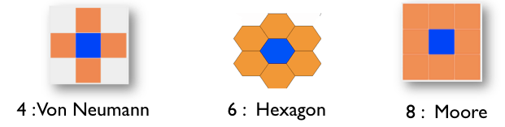

Grid Species
A grid is a particular species of agents. Indeed, a grid is a set of agents that share a grid topology (until now, we only saw species with continuous topology). As other agents, a grid species can have attributes, attributes, behaviors, aspects However, contrary to regular species, grid agents are created automatically at the beginning of the simulation. It is thus not necessary to use the create statement to create them. Moreover, in addition to classic built-in variables, grid a provided with a set of additional built-in variables.
Index
Declaration
Instead of using the species keyword, use the keyword grid to declare a grid species. The grid species has exactly the same facets of the regular species, plus some others.
To declare a grid, you have to specify the number of columns and rows first. You can do it two different ways:
Using the two facets width: and height: to fix the number of cells (the size of each cells will be determined thanks to the environment dimension).
grid my_grid width:8 height:10 {
// my_grid has 8 columns and 10 rows
}
Using the two facets cell_width: and cell_height: to fix the size of each cells (the number cells will be determined thanks to the environment dimension).
grid my_grid cell_width:3 cell_height:2 {
// my_grid has cells with dimension 3m width by 2m height
}
By default, a grid is composed by 100 rows and 100 columns.
Another facet exists for grid only, very useful. It is the neighbors facet, used to determine how many neighbors has each cell. You can choose among 3 values: 4 (Von Neumann), 6 (hexagon) or 8 (Moore).

A grid can also be provided with specific facets that allows to optimize the computation time and the memory space, such as use_regular_agents, use_indivitual_shapes and use_neighbors_cache. Please refer to the GAML Reference for more explanation about those particular facets.
Built-in attributes
grid_x
This variable stores the column index of a cell.
grid cell width: 10 height: 10 neighbors: 4 {
init {
write "my column index is:" + grid_x;
}
}
grid_y
This variable stores the row index of a cell.
grid cell width: 10 height: 10 neighbors: 4 {
init {
write "my row index is:" + grid_y;
}
}
agents
return the set of agents located inside the cell. Note the use of this variable is deprecated.
It is preferable to use the inside operator:
//: # (keyword|operator_inside)
grid cell width: 10 height: 10 neighbors: 4 {
list<bug> bugs_inside -> {bug inside self};
}
color
The color built-in variable is used by the optimized grid display. Indeed, it is possible to use for grid agents an optimized aspect by using in a display the grid keyword. In this case, the grid will be displayed using the color defined by the color variable. The border of the cells can be displayed with a specific color by using the lines facet.
Here an example of the display of a grid species named cell with black border.
experiment main_xp type: gui{
output {
display map {
grid cell lines: rgb("black") ;
}
}
}
neighbors
The neighbors built-in variable returns the list of cells at a distance of 1.
grid my_grid {
reflex writeNeighbors {
write neighbors;
}
}
grid_value
The grid_value built-in variable is used when initializing a grid from grid file (see later). It is also used for the 3D representation of DEM.
Access to a cell
there are several ways to access to a specific cell:
- by a location: by casting a location to a cell (the unity (
#m,#cm, etc...) is defined when you choose your environment size, in the global species.
global {
init {
write "cell at {57.5, 45} :" + cell({57.5, 45});
}
}
grid cell width: 10 height: 10 neighbors: 4 {
}
- by the row and column indexes: like matrix, it is possible to directly access to a cell from its indexes
global {
init {
write "cell [5,8] :" + cell[5,8];
}
}
grid cell width: 10 height: 10 neighbors: 4 {
}
The operator grid_at also exists to get a particular cell. You just have to specify the index of the cell you want (in x and y):
global {
init {
agent cellAgent <- cell grid_at {5,8};
write "cell [5,8] :" + cellAgent;
}
}
grid cell width: 10 height: 10 neighbors: 4 {
}
Display Grid
You can easily display your grid in your experiment as followed :
experiment MyExperiment type: gui {
output {
display MyDisplay type: opengl {
grid MyGrid;
}
}
}
The grid will be displayed, using the color you defined for each cell (with the "color" built-in attribute). You can also show border of each cell by using the facet "lines:" and choosing a rgb color:
grid MyGrid lines:#black;
An other way to display a grid will be to define an aspect in your grid agent (the same way as for a regular species), and define your grid as a regular species then in your experiment, choosing your aspect :
grid MyGrid {
aspect firstAspect {
draw square(1);
}
aspect secondAspect {
draw circle(1);
}
}
experiment MyExperiment type: gui {
output {
display MyDisplay type: opengl {
species MyGrid aspect:firstAspect;
}
}
}
Beware : don't use this second display when you have large grids : it's much slower.
Grid from a matrix
An easy way to load some values in a grid is to use matrix data. A matrix is a type of container (we invite you to learn some more about this useful type here). Once you have declared your matrix, you can set the values of your cells using the ask statement :
global {
init {
matrix data <- matrix([[0,1,1],[1,2,0]]);
ask cell {
grid_value <- float(data[grid_x, grid_y]);
}
}
}
Declaring larger matrix in GAML can be boring as you can imagine. You can load your matrix directly from a csv file with the operator matrix (used for the contruction of the matrix).
file my_file <- csv_file("path/file.csv","separator");
matrix my_matrix <- matrix(my_file);
You can try to read the following csv :
0,0,0,0,0,0,0,0,0,0,0
0,0,0,1,1,1,1,1,0,0,0
0,0,1,1,0,0,0,1,1,0,0
0,1,1,0,0,0,0,0,0,0,0
0,1,1,0,0,1,1,1,1,0,0
0,0,1,1,0,0,1,1,1,0,0
0,0,0,1,1,1,1,0,1,0,0
0,0,0,0,0,0,0,0,0,0,0
With the following model :
model import_csv
global {
file my_csv_file <- csv_file("../includes/test.csv",",");
init {
matrix data <- matrix(my_csv_file);
ask my_gama_grid {
grid_value <- float(data[grid_x,grid_y]);
write data[grid_x,grid_y];
}
}
}
grid my_gama_grid width: 11 height: 8 {
reflex update_color {
write grid_value;
color <- (grid_value = 1) ? #blue : #white;
}
}
experiment main type: gui{
output {
display display_grid {
grid my_gama_grid;
}
}
}
For more complicated models, you can read some other files, such as ASCII files (asc), DEM files...
Example
To practice a bit those notions, we will build a quick model. A "regular" species will move randomly on the environment. A grid is displayed, and its cells becomes red when an instance of the regular species is waking inside this cell, and yellow when the regular agent is in the surrounding of this cell. If no regular agent is on the surrounding, the cell turns green.

Here is an example of implementation:
model my_grid_model
global{
float max_range <- 5.0;
int number_of_agents <- 5;
init {
create my_species number:number_of_agents;
}
reflex update {
ask my_species {
do wander amplitude:180;
ask my_grid at_distance(max_range)
{
if(self overlaps myself)
{
self.color_value <- 2;
}
else if (self.color_value != 2)
{
self.color_value <- 1;
}
}
}
ask my_grid {
do update_color;
}
}
}
species my_species skills:[moving] {
float speed <- 2.0;
aspect default {
draw circle(1) color:#blue;
}
}
grid my_grid width:30 height:30 {
int color_value <- 0;
action update_color {
if (color_value = 0) {
color <- #green;
}
else if (color_value = 1) {
color <- #yellow;
}
else if (color_value = 2) {
color <- #red;
}
color_value <- 0;
}
}
experiment MyExperiment type: gui {
output {
display MyDisplay type: java2D {
grid my_grid lines:#black;
species my_species aspect:default;
}
}
}